ChatGLM2-6B
GitHub - THUDM/ChatGLM2-6B: ChatGLM2-6B: An Open Bilingual Chat LLM | 开源双语对话语言模型
我的老朋友
都是泪啊！硬件跟不上，又上不了云，又想搞一下，只能先弄个丐版了……先透露一下，那响应速度简直了……
OS 名称： Microsoft Windows 10 教育版
处理器： i5-4590T CPU @ 2.00GHz
系统类型： x64-based PC
OS 版本： 10.0.19042 暂缺 Build 19042
机带RAM： 12.0GB
GPU： 你猜
你可以命令行输入
还需要什么
光有硬件还不行，还得来点软件，咱得两手抓。现在这个行情，必须得把
Python
人生苦短，我用Python。之前已经安装过了，版本是：Python 3.10.2。如果没有安装过，先去官网下载一下：Welcome to Python.org
多说一句：安装的时候，记得添加到
注意：这里还设置了
GCC
Git
克隆
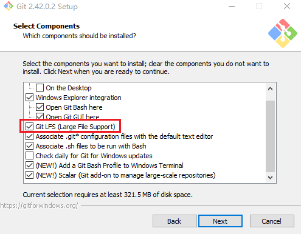
好戏开场了
下载模型
又火了一个站点：Hugging Face。看看这吉祥物多可爱：🤗。按理说咱应该去人家拥抱脸那里下载，都不知道网上好多教程的大神们是怎么串门的，反正我这里是不行啊，难道她没有给我发请帖，太难了。还好，又给我开了一扇窗：互链高科，不过这窗户始终是窗户啊，太慢了。这里不得不说一下人家
重点：【互链高科】下载【清华大学云盘】中没有的文件，两者合并，完美。
这里将下载的模型放到
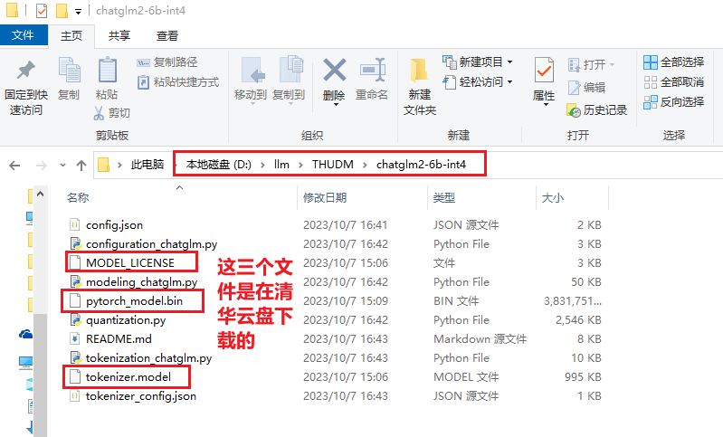
下载仓库
这个就比较简单了，直接去GitHub搞就行了。你可以使用 git 克隆；也可以官网上下载zip压缩包；如果有发布版本，你也可以下载稳定的版本（这里没有啊）。
这里将下载的仓库放到
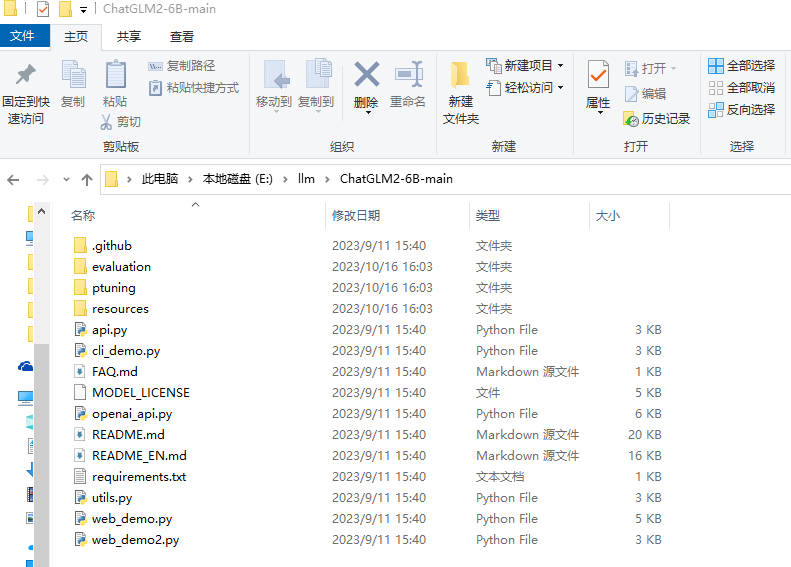
说明：这里的仓库是今天（2023-10-16）在GitHub获取的。
新建 modelPath.py 文件
在代码中搜索
Model_Local_Path = "D:\llm\THUDM\chatglm2-6b-int4"
本地模型和CPU部署
为了支持本地模型和CPU部署，需要修改一下代码。模型支持三种访问模式：命令行、API、WebUI。先用WebUI测试一下，展示效果比较好。修改
# 引入本地模型绝对路径
from modelPath import Model_Local_Path
# 原始代码
tokenizer = AutoTokenizer.from_pretrained("THUDM/chatglm2-6b", trust_remote_code=True)
model = AutoModel.from_pretrained("THUDM/chatglm2-6b", trust_remote_code=True).cuda()
# 用下面的两行代码替换上面的
# .float() 支持CPU
tokenizer = AutoTokenizer.from_pretrained(Model_Local_Path, trust_remote_code=True)
model = AutoModel.from_pretrained(Model_Local_Path, trust_remote_code=True).float()
虚拟环境
# 创建虚拟环境
python -m venv venv
# 激活虚拟环境
.\venv\scripts\activate

安装依赖
# 我这里设置全局的清华镜像源
pip install -r requirements.txt
# 如果你不想全局设置，也可以仅本次安装时使用镜像源（如下面的截图）
pip install -r requirements.txt -i https://pypi.tuna.tsinghua.edu.cn/simple
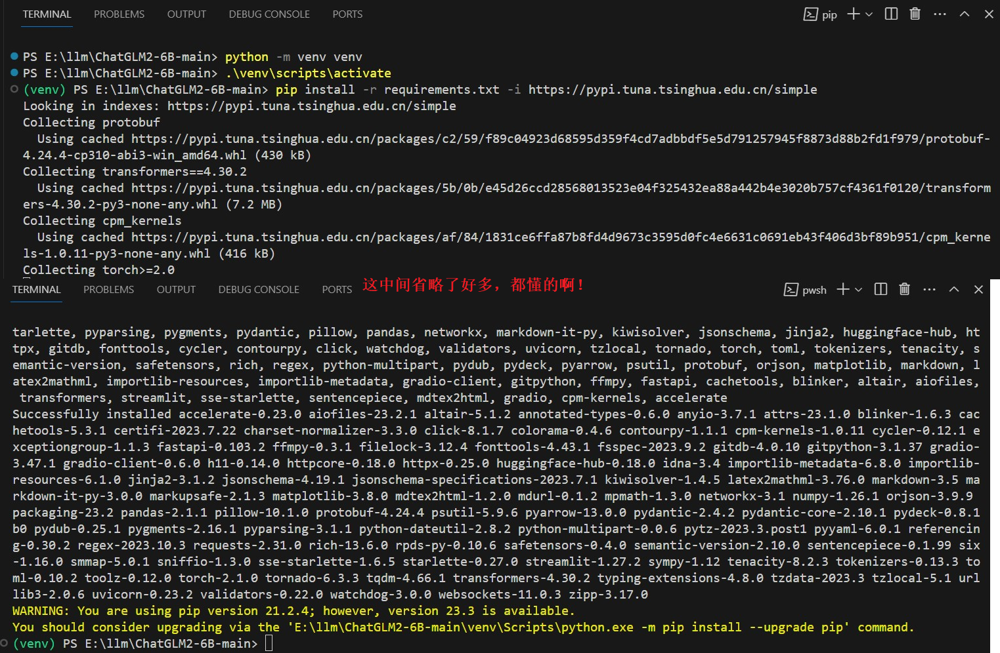
跑起来
# 命令行 Demo
python cli_demo.py
# 基于 Gradio 的网页版 demo 【注意】问答时出现bug，前端操作dom的问题
python web_demo.py
# 基于 Streamlit 的网页版 demo
streamlit run web_demo2.py
这里运行的是基于 Streamlit 的网页版。命令行会出现一些错误，但是并不影响运行。效果图如下：
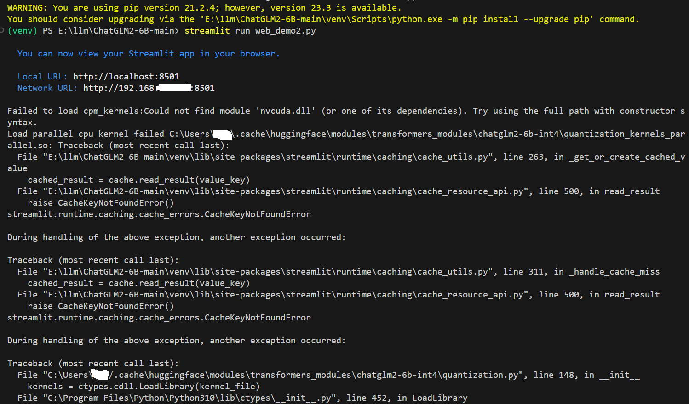
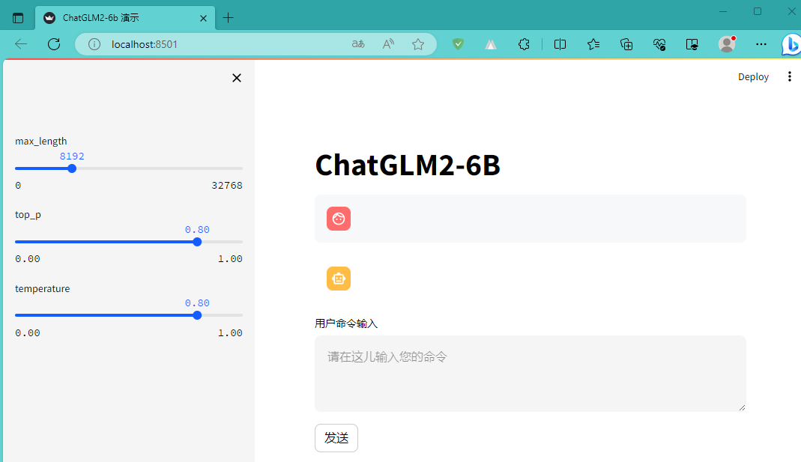
赶紧聊聊吧
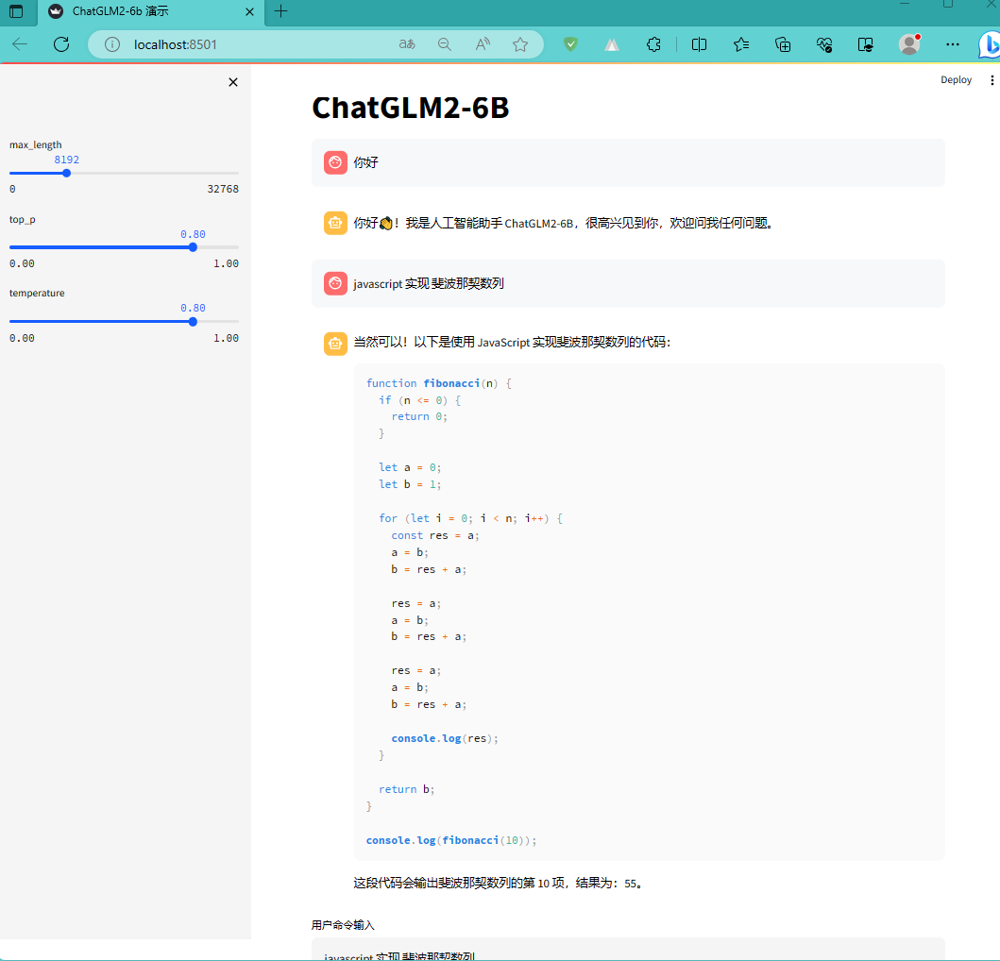
这家伙生成的代码，很有随机性。这次回答的和上次差异很大啊！我都不好意思截图了。不过，咱也得体谅啊，毕竟这是改版啊，你说是吧。下面的截图是前几天第一次跑通时的截图：
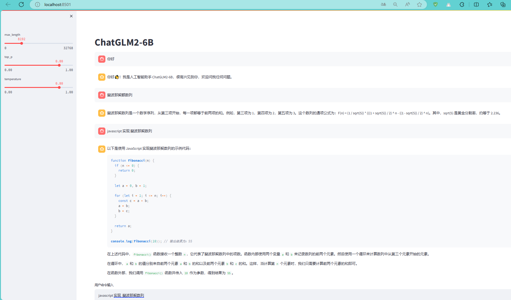
开始码砖
上面基于命令行、Web UI简单的体验了一下。咱肯定不能止步于此啊，是吧！赶紧操作起来吧！
示例1：ChatGLM2-6B/api.py + langchain
服务器端
项目中已经提供了
if __name__ == '__main__':
Model_Local_Path = "D:\llm\THUDM\chatglm2-6b-int4"
tokenizer = AutoTokenizer.from_pretrained(Model_Local_Path, trust_remote_code=True)
model = AutoModel.from_pretrained(Model_Local_Path, trust_remote_code=True).float()
# 多显卡支持，使用下面三行代替上面两行，将num_gpus改为你实际的显卡数量
# model_path = "THUDM/chatglm2-6b"
# tokenizer = AutoTokenizer.from_pretrained(model_path, trust_remote_code=True)
# model = load_model_on_gpus(model_path, num_gpus=2)
model.eval()
uvicorn.run(app, host='127.0.0.1', port=8899, workers=1)
好了，代码弄好了，赶紧让API跑起来吧！请您输入启动命令：
# API Demo
python api.py
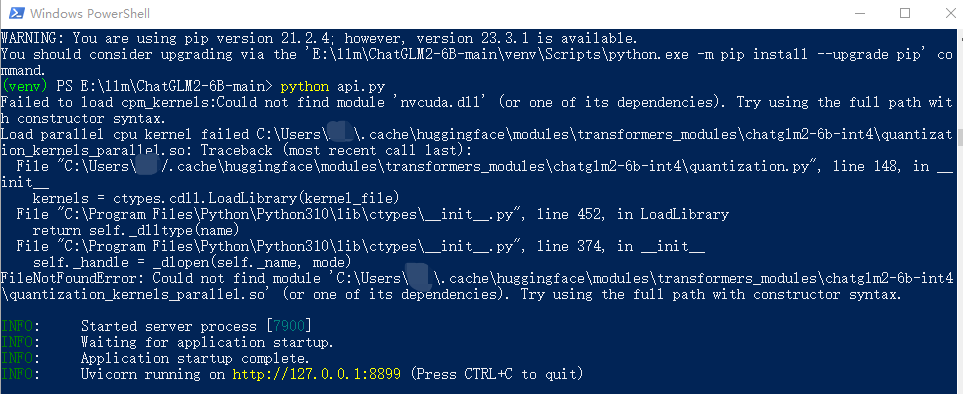
客户端
API跑起来之后，先用大名鼎鼎的
第一个例子
具体代码如下：
import traceback
from langchain.prompts import PromptTemplate
from langchain.llms.chatglm import ChatGLM
from langchain.chains import LLMChain
template = """{question}"""
prompt = PromptTemplate(template=template, input_variables=["question"])
llm = ChatGLM(
endpoint_url="http://127.0.0.1:8899",
max_token=80000,
history=[],
top_p=0.9,
model_kwargs={"sample_model_args": False},
)
llm_chain = LLMChain(prompt=prompt, llm=llm)
try:
question1 = "你的名字是什么啊"
print("问：" + question1)
answer1 = llm_chain.run(question1)
print("答：" + str(answer1))
question2 = "你知道 xiaodu114 吗"
print("问：" + question2)
answer2 = llm_chain.run(question2)
print("答：" + str(answer2))
except Exception as ex:
print(ex.args)
print("="*24+">")
print(traceback.format_exc())
第二个例子
具体代码如下：
import traceback
from langchain.llms.chatglm import ChatGLM
from langchain.chains.question_answering import load_qa_chain
llm = ChatGLM(
endpoint_url="http://127.0.0.1:8899",
max_token=80000,
history=[],
top_p=0.9,
model_kwargs={"sample_model_args": False},
)
chain = load_qa_chain(llm, chain_type="stuff")
question = "你知道 xiaodu114 吗？"
try:
print("问：" + question)
answer = chain.run(input_documents=[], question=question)
print("答：" + str(answer))
except Exception as ex:
print(ex.args)
print("="*24+">")
print(traceback.format_exc())
上面的两个例子分别使用：LLMChain 和 load_qa_chain，在结果上有所不同，回答结果和日志信息也有些令人吃惊，下面是结果：
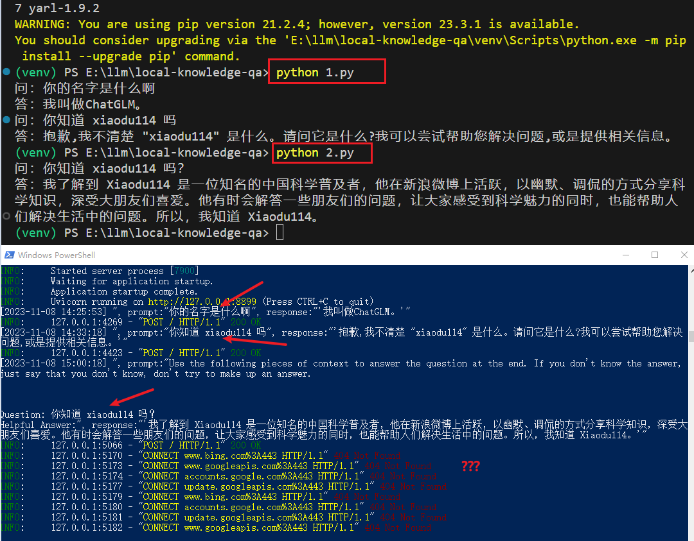
示例2：ChatGLM2-6B/openai_api.py + javascript
你可以看看这篇文章：OpenAI开发系列（十）：Chat Completion Models API详解与构建本地知识库问答系统实践
服务器端
这个示例使用
# API Demo（模拟 openai api）
python openai_api.py
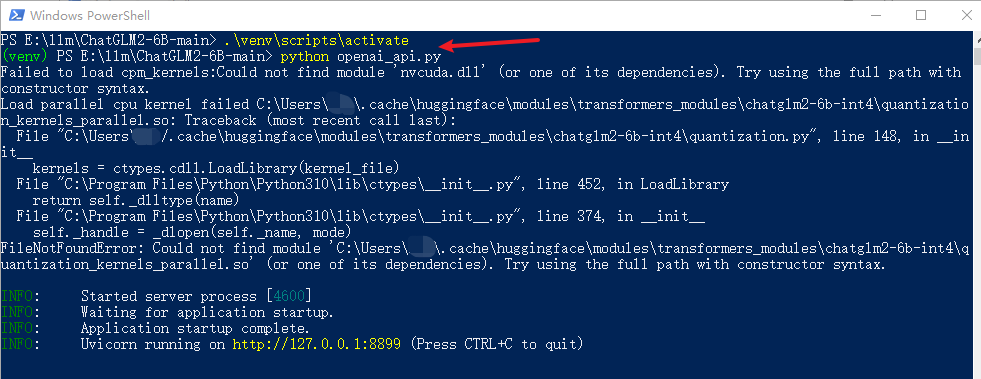
客户端
javascript 调用代码
具体代码如下：
const btnOpenAiAPIEle = document.getElementById("btnOpenAiAPI");
btnOpenAiAPIEle.addEventListener("click", () => {
let myHeaders = new Headers();
myHeaders.append("Content-Type", "application/json");
myHeaders.append("Accept", "text/event-stream");
const url = "http://127.0.0.1:8899/v1/chat/completions";
fetch(url, {
method: "POST",
headers: myHeaders,
body: JSON.stringify({
model: "xxx",
stream: true,
messages: [{ role: "user", content: "你好" }]
})
}).then(
(response) => {
if (!(response && response.ok)) {
console.error("异常：" + response.status);
return;
}
let reader = response.body.getReader();
reader.read().then(function processResult(result) {
if (result.done) {
console.log("Event stream ended.");
return;
}
const decoder = new TextDecoder();
const decodedString = decoder.decode(result.value);
console.log(decodedString);
// 继续读取下一个事件流数据
reader.read().then(processResult);
});
},
(error) => {
console.error(`异常：${JSON.stringify(error)}`);
}
);
});
果然是不顺利啊！这异常可真长……
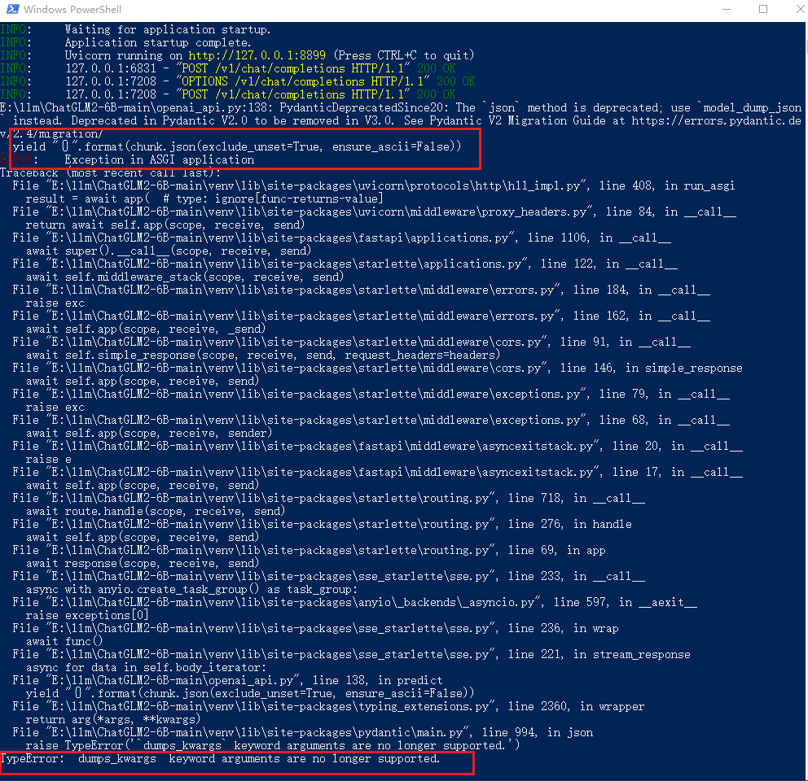
# 修改之前的代码。可以用下面的代码替换。这里共修改了三处
"{}".format(chunk.json(exclude_unset=True, ensure_ascii=False))
# 修改之后
"{}".format(chunk.model_dump_json(exclude_unset=True))
修改完代码之后，重新执行
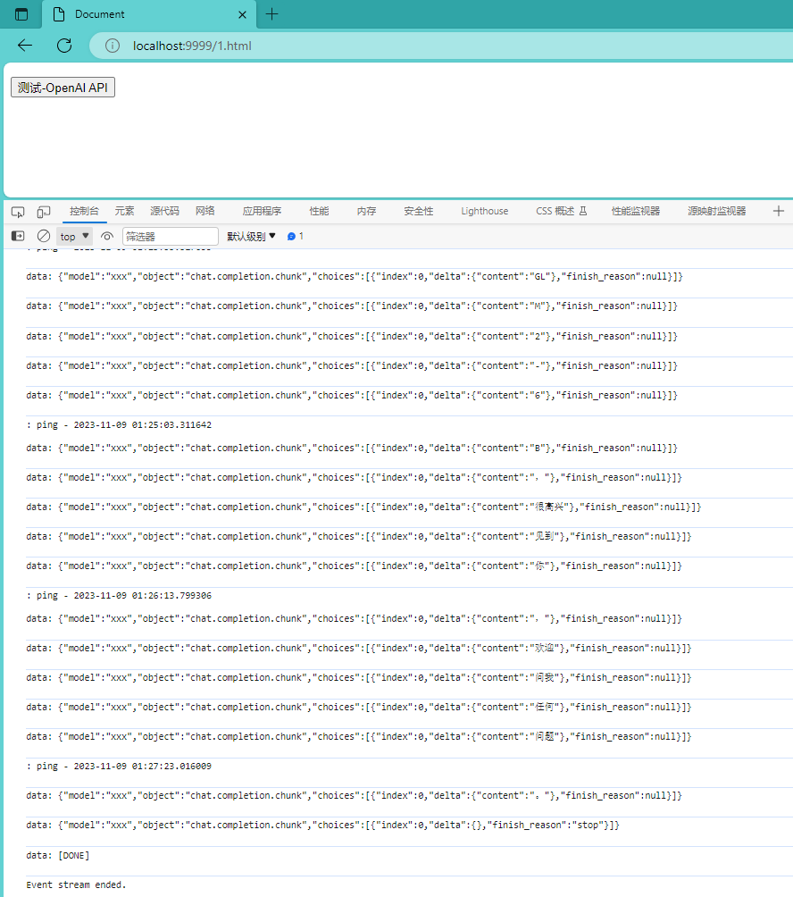
示例3：服务器 Hello World
采用
传送门：FastAPI
服务器端
import datetime
import uvicorn
from fastapi import FastAPI
from fastapi.middleware.cors import CORSMiddleware
app = FastAPI()
app.add_middleware(
CORSMiddleware,
allow_origins=["*"],
allow_credentials=True,
allow_methods=["*"],
allow_headers=["*"],
)
@app.get("/GetDateTime")
def get_server_datetime():
return datetime.datetime.now().strftime("%Y-%m-%d %H:%M:%S")
if __name__ == '__main__':
uvicorn.run(app, host='127.0.0.1', port=8899, workers=1)
启动一个服务器不要太方便哦！还贴心的带上了API文档，简直不要太爽啊！请看：
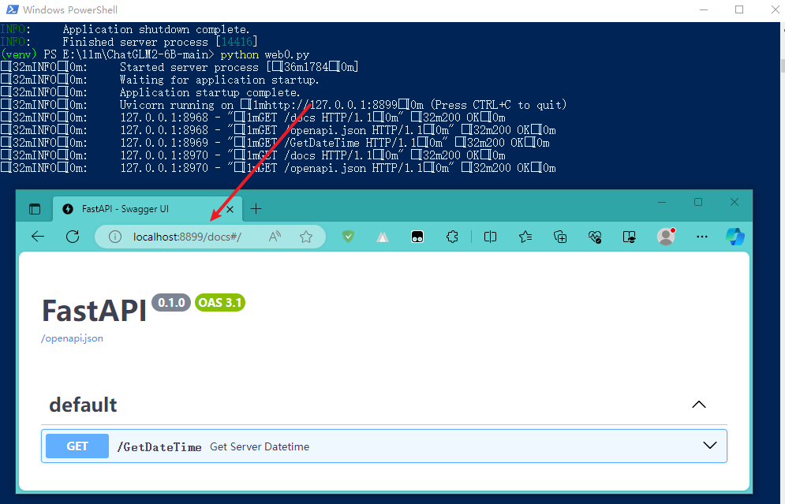
客户端
const btnGetDateTimeEle = document.getElementById("btnGetDateTime");
btnGetDateTimeEle.addEventListener("click", () => {
fetch("http://127.0.0.1:8899/GetDateTime")
.then(
(response) => {
if (response.ok) {
return response.json();
} else {
console.error(`异常！响应状态码：${response.status} ；响应状态信息：${response.statusText}`);
}
},
(error) => {
console.error(`异常！ ${JSON.stringify(error)}`);
}
)
.then((data) => {
alert("服务器端时间：" + data);
});
});
示例4：偷师 openai_api.py
这里想着学习一下
你可以看看这篇文章：ChatGLM-6B是如何生成回复的？技术详解 - 知乎
服务器端
点击查看代码
import datetime
import json
import traceback
import uvicorn
from transformers import AutoTokenizer, AutoModel
from fastapi import FastAPI, Request
from fastapi.middleware.cors import CORSMiddleware
from sse_starlette.sse import EventSourceResponse
app = FastAPI()
app.add_middleware(
CORSMiddleware,
allow_origins=["*"],
allow_credentials=True,
allow_methods=["*"],
allow_headers=["*"],
)
@app.get("/GetDateTime")
def get_server_datetime():
return datetime.datetime.now().strftime("%Y-%m-%d %H:%M:%S")
async def process(prompt, max_length, top_p, temperature, history):
"""
发文字消息
"""
# 不能是空消息
if not prompt:
yield "prompt 不能为空"
return
try:
current_length = 0
# 经测试发现，历史对话也就是 history 参数需要的格式如下：
# [('中国的首都是哪里', '中国的首都是北京。'), ('他的面积是多少', '北京市的总面积大约为16,800平方公里。')]
for response, history in model.stream_chat(tokenizer,
prompt,
history=history,
max_length=max_length if max_length else 999999,
top_p=top_p if top_p else 0.7,
temperature=temperature if temperature else 0.95):
if len(response) == current_length:
continue
new_text = response[current_length:]
current_length = len(response)
yield json.dumps({"text":str(new_text)},ensure_ascii=False)
except Exception as ex:
yield ex.args +"\n" + traceback.format_exc()
return
@app.post("/ChatStream")
async def create_item(request: Request):
global model, tokenizer
json_post_raw = await request.json()
json_post = json.dumps(json_post_raw)
json_post_list = json.loads(json_post)
prompt = json_post_list.get('prompt')
max_length = json_post_list.get('max_length')
top_p = json_post_list.get('top_p')
temperature = json_post_list.get('temperature')
history = json_post_list.get('history')
# 先这样定一下客户端传入 history 的格式，如下：
# [["中国的首都是哪里", "中国的首都是北京。"],["他的面积是多少", "北京市的总面积大约为16,800平方公里。"]]
# 这里在转成 model.stream_chat 需要的格式
history = [tuple(h) for h in history]
answer_text = process(prompt, max_length, top_p, temperature,history)
return EventSourceResponse(answer_text, media_type="text/event-stream")
if __name__ == '__main__':
model_path = "D:\llm\THUDM\chatglm2-6b-int4"
tokenizer = AutoTokenizer.from_pretrained(model_path, trust_remote_code=True)
model = AutoModel.from_pretrained(model_path, trust_remote_code=True).float()
model = model.eval()
uvicorn.run(app, host='127.0.0.1', port=8899, workers=1)
客户端
这里还是使用
点击查看代码
const btnTest1Ele = document.getElementById("btnTest1");
btnTest1Ele.addEventListener("click", () => {
let myHeaders = new Headers();
myHeaders.append("Content-Type", "application/json");
myHeaders.append("Accept", "text/event-stream");
// 陆续询问下面这几个问题：
// 中国的首都是哪里
// 他的面积是多少
// 他有机场吗？几座？
// 下辖哪些行政区域
const url = "http://127.0.0.1:8899/ChatStream";
fetch(url, {
method: "POST",
headers: myHeaders,
// body: JSON.stringify({
// prompt: "中国的首都是哪里",
// history: []
// })
// body: JSON.stringify({
// prompt: "他的面积是多少",
// history: [["中国的首都是哪里", "中国的首都是北京。"]]
// })
body: JSON.stringify({
prompt: "他有机场吗？几座？",
history: [
["中国的首都是哪里", "中国的首都是北京。"],
["他的面积是多少", "北京市的总面积大约为16,800平方公里。"]
]
})
}).then(
(response) => {
if (!(response && response.ok)) {
console.error("异常：" + response.status);
return;
}
let answer = "";
let reader = response.body.getReader();
const decoder = new TextDecoder();
reader.read().then(function processResult(result) {
if (result.done) {
console.log("Event stream ended.");
console.log(answer);
return;
}
try {
let decodedString = decoder.decode(result.value);
console.log(decodedString);
if (decodedString.startsWith("data:")) {
let data = JSON.parse(decodedString.slice("data:".length).trim());
answer += data.text;
}
} catch (error) {}
// 继续读取下一个事件流数据
reader.read().then(processResult);
});
},
(error) => {
console.error(`异常：${JSON.stringify(error)}`);
}
);
});
不行，我得截个图，让你们看看效果：
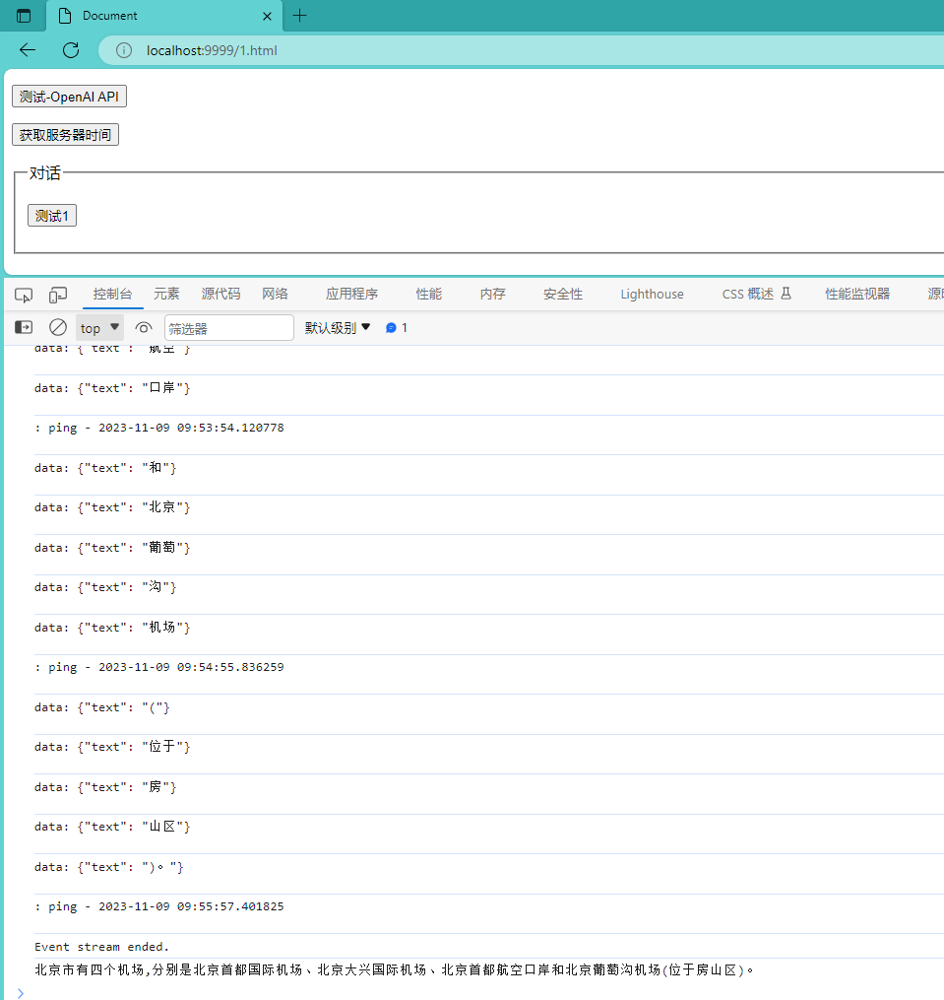
微调
这才是硬菜。在通用大语言模型的基础上，添加些自己特色的语料，让其成为你的贴心小助手。
理想很丰满，显示很苗条。暂时没有调通，还得继续吃啊！得赶紧胖起来。
记录一下我的微调过程：
- 安装依赖
- pip install rouge_chinese nltk jieba datasets
- 准备数据集
- 可以按照官网上的关于广告的，也可以自己弄点。感觉广告的有点大，怕把我这老朋友累着，这里参考的是：LangChain + ChatGLM2-6B 搭建个人专属知识库 - 知乎
- 修改 main.py 文件
- 仅依靠CPU，需要修改一下。CPU不支持
half - 禁用 W&B
- 控制台： export WANDB_DISABLED=true
- 【说明】如果不禁用可能会中断微调训练，以防万一，还是禁了吧
- .sh转.bat
- 运行 .sh文件会有问题，哪怕已经安装 git 。
- 转.bat文件，这里参考的是：ChatGLM2-6B在Windows下的微调_豪杰笑开怀的博客-CSDN博客
-
- 官方参数解说
- train.sh 中的 PRE_SEQ_LEN 和 LR 分别是 soft prompt 长度和训练的学习率，可以进行调节以取得最佳的效果。
- P-Tuning-v2 方法会冻结全部的模型参数，可通过调整 quantization_bit 来被原始模型的量化等级，不加此选项则为 FP16 精度加载。
- 在默认配置 quantization_bit=4、per_device_train_batch_size=1、gradient_accumulation_steps=16 下， INT4 的模型参数被冻结，一次训练迭代会以 1 的批处理大小进行 16 次累加的前后向传播，等效为 16 的总批处理大小，此时最低只需 6.7G 显存。 若想在同等批处理大小下提升训练效率，可在二者乘积不变的情况下，加大 per_device_train_batch_size 的值，但也会带来更多的显存消耗，请根据实际情况酌情调整。
- 微调时间太长了
- 参数 max_steps 必须大于 save_steps 。他们哥俩的值越大时间越长……
革命尚未成功，还得继续搞啊！我的微调……